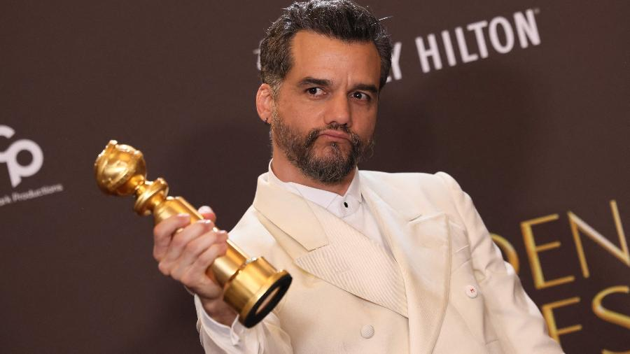
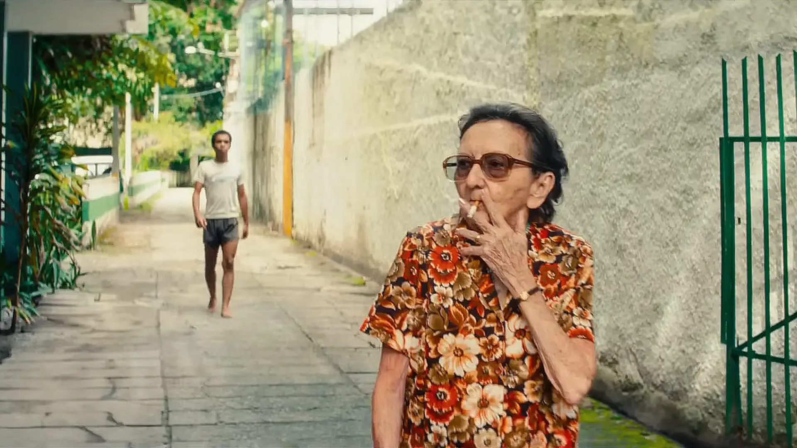
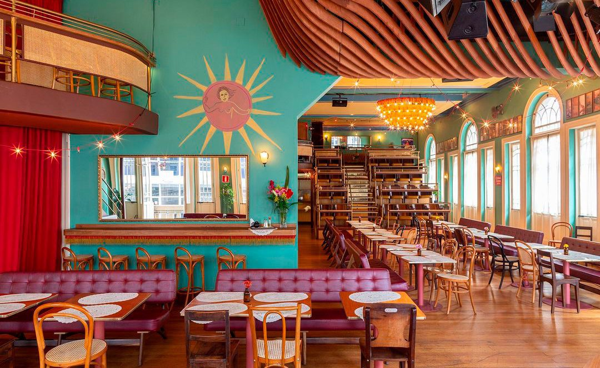

Wagner Moura marca presença no Globo de Ouro e reforça o protagonismo brasileiro em Hollywood
- Cerimônia reuniu estrelas de Hollywood.
- Ator representou o Brasil no evento.
- Discursos e prêmios movimentaram a noite.

Wagner Moura leva prêmio para casa
- Confira a categoria que o ator brasileiro venceu

Conheça filme vencedor do Globo de Ouro 2026
- Obra brasileira carrega duas premiações internacionais

Alta costura no Globo de Ouro 2026
- Veja todos os looks dos convidados do evento
Streaming amplia catálogo de filmes
- Produções originais em destaque
Diretores apostam em narrativas curtas

Novo filme nacional estreia nos cinemas
- Direção aposta em realismo

Novo jogo de mundo aberto promete revolucionar a experiência multiplayer
- Mapa expansivo com eventos dinâmicos e exploração cooperativa
- Sistema online permite interação entre milhares de jogadores

Atualização surpresa traz melhorias de desempenho e novos modos de jogo
- Redução no tempo de carregamento e aumento da taxa de quadros
- Novos modos competitivos ampliam as opções para jogadores veteranos
Tendências gastronômicas de 2026 valorizam sabores regionais
- Chefs resgatam receitas tradicionais com releituras criativas
- Uso de ingredientes sazonais ganha cada vez mais espaço

Novo restaurante em São Paulo aposta em culinária contemporânea para conquistar o público
Cientistas desenvolvem novo material mais leve e resistente
- Descoberta pode impactar os setores de construção e tecnologia
- Testes iniciais mostram alta durabilidade e baixo custo
Pesquisa revela avanços no entendimento do cérebro humano
- Estudo identifica novas conexões neurais ligadas à memória
- Resultados abrem caminho para tratamentos neurológicos inovadores